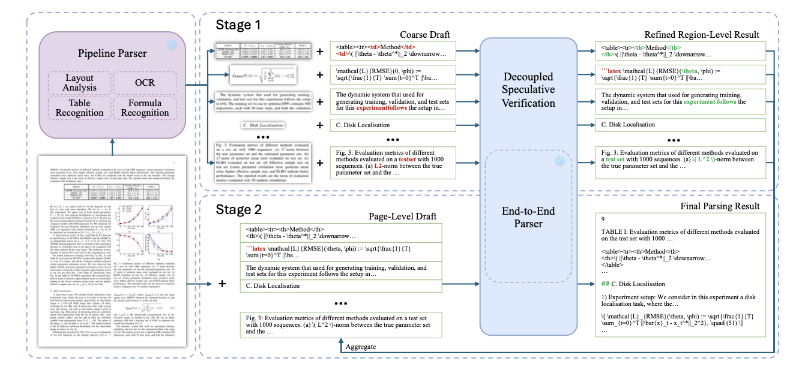
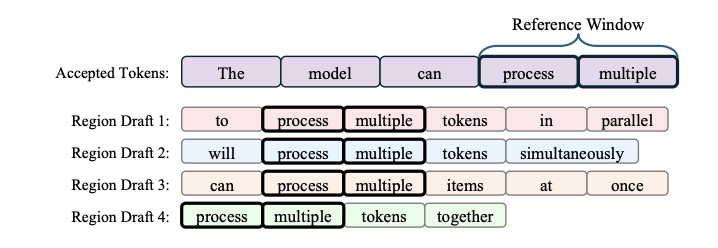

Paper Notes: Hierarchical Speculative Decoding
last updated 2026-05-22
The central argument of the paper is: region-level OCR (like Dolphin OCR) is fast but limited in quality because you don’t get “page-level coherence.” End-to-end OCR (like HunyuanOCR) is slow but higher quality. But by using the region-level OCR as a speculative decoder, you can get a speedup of ~3x without a loss in quality. And, importantly, without training anything.
Speculative Decoding in 3 Parts
The approach itself is quite neat. They break the OCR process into 3 parts:
- run a cheap pipeline system, like PaddleOCRv3, that predicts (a) layout blocks, (b) text, (c) formulas, and (d) tables;
- then, for each layout block, crop the image and run your VLM model on that region, using the best guess from the previous model as your draft; and
- finally, concatenate all of your region-level results and use those as a draft for your page-level VLM run.

Decoupled Speculative Verification
From my reading, this appears to be a combination of n-gram speculative decoding (using, e.g. bigrams as the “reference window” to find candidate continuations from the draft) and EAGLE-2-style tree-structured attention masking.

The tree-structured attention masking allows you to decode multiple hypotheses at once, without suffering too heavy a throughput penalty.
Measuring Speedups
The only two metrics that matter to me are the end-to-end speedup and the average acceptance length. They report on just the decoding speedup, but considering you have to run a whole OCR pipeline before starting decoding…
However, the end-to-end speedup – which they happily also report – goes from about 1.3x to to 3.4x. That’s impressive for no new trained models!
Limitations
Possible speedups are limited by two elements:
- How close the initial pipelined OCR’s outputs are to the big model’s – if they’re bad then acceptance goes down and performance tanks.
- How many regions there are in the image – an image with few regions means the second step must generate a lot of text in one go, and image with many regions can have higher speedups.
The lowest speedups come from scans, where the pipeline OCR approach gives the worst hypotheses. The majority of the speedups on OlmOCRBench come from printed/rendered born digital docs.
They do see much higher speedups than existing speculative decoding approaches like Medusa and EAGLE-2. Other approaches saw less than 2x speedups in the general case (but could be worth investigating depending on the distribution of docs that you have).